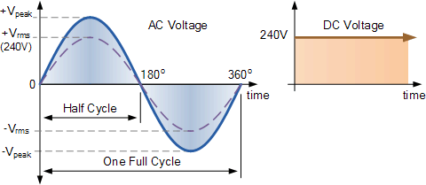

What is EEG?
===============
Electroencephalography (EEG) is an electrophysiological monitoring method to record electrical activity of the brain.
How do I get the actual time of a sample?
===========================================
For CSV format:
REAL TIME =timestamp started (ms)+ TIME_STAMP_s
1000 + TIME_STAMP_ms
What is a unit in emotiv?
===========================
(As seen in csv)
units:emotiv
measurement units = one emotiv unit is almost exactly one microvolt.
What is the 'recorded' csv format?
============================================
recorded:28.07.15 11.14.10
[Year]=[Month]=[Day] [Hours].[Minutes].[Seconds]
Note: a session begins (for emotiv csv) when the headset connects to the application, not when a recording begins
For CyKIT / emokit csv, a session begins when the recording begins.
What is the 'timestamp started' csv format?
============================================
timestamp started: 2017=07=04T11:55:54.734969+07:00
ISO time when the session was started and the timestamps began, to the nearest millisecond.
[Year]=[Month]=[Day]T[Hours]:[Minutes]:[Seconds]+[hours from GMT]
What is an 'RMS voltage value' ?
===================================
RMS voltage value is a measurement to convert a sinusoidal waveform into the equivelant DC voltage.
Where a sinusoidal wave (AC) would be plotted as alternating between positive and negative, an RMS
value would be a steady straight line, representing the average power(voltage) being produced by
the waveform, in DC format.

How do I calculate the 'RMS value' ?
========================================
Take a sinusoidal wave and split the wave into their respective voltages. They can be spaced as far
as you like, but the closer the segments are to one another. The more accurate the RMS measurement
will be. Take each wave segments voltage, and multiply it by itself. (ie: squared, segment_voltage ^ 2)
Then add each squared segment together. Divide this sum by the total number of segments you have added together.
(ie: (V^2 + v^2 + V2) / 3)
Then find the square root of this sum. This is your RMS value.
RMS = SQRT(((V^2 + V^2 + V^2 + V^2) / 4))
What is Full Scale (FS) or Full Scale Deflection (FSD)?
===========================================================
In electronics and signal processing, full scale or full code represents the maximum current, amperage
or voltage a system can present. The amount the measurement is away from 0, is called the deflection.
What is 'Sampling Rate' ?
=============================
Sampling rate, is the rate at which data is sent out from the system.
For the EPOC and Insight headsets, this is 128 Hz
Epoc+ can send at either 128Hz or 256Hz.
Is it possible to restore 50 and 60hz?
==========================================
Yes. With an ‘inverse filter’ function it may be possible to restore some of the signal
in the 50 and 60Hz zones. Matlab may be required to located and delete mains exclusively.
The inverse filter method works. However the dynamic range of the signal is compressed
because the signal is pushed to a very low value, where the remaining bits are noisy
with the notch frequencies. Most of the unfiltered signal can be recovered, with exception
to 1 or 2 Hz around the mains frequency.
Does emokit work with all emotiv headsets?
==============================================
We are currently developing for all headsets.
What is the 'Mains' ?
=========================
Mains harmonic measurement.
AC power to homes, factories and offices is normally delivered at a frequency of 50 or 60 Hz,
depending on the region of the world where you live. ... Harmonics are a distortion of the
normal electrical current waveform.
How does the 'Mains harmonic measurement' effect my EEG signal?
===================================================================
the 120Hz second harmonic of the 60Hz mains gets folded back into the data as an 8Hz spike
(100Hz folds back at 28Hz, and so on). You will need a higher=end system and decent screening
to get meaningful data above 64Hz at this stage.
How is EEG measured?
========================
EEG is measured in volts. For more precise measurements, microvolts.
Expressed as: µV (or uV)
What are brain wave rhythms?
================================
There are four distinct periodic rhythms, identified by frequency in Hz (hertz) / or cycles per second.
also identified by amplitude.
What are the types of brain wave rhythms are there?
=======================================================
The four basic rhythms have been associated with various states.
Alpha
=======
8 = 3 Hz
20=200 uV
Beta
======
13 = 30 Hz
5 = 10 uV
Delta
=======
1 = 5 Hz
20 = 200 uV
Theta
=======
4 = 8 Hz
10 uV
How many volts is a microvolt?
==================================
1 / 1,000,0000 of a volt.
Defenitions.
===============
Brain Wave Rhythm Descriptions
=================================
Alpha Wave:
Alpha rhythm is the prominent EEG wave pattern of an adult who is awake but relaxed with eyes closed.
Each region of the brain has a characteristic alpha rhythm but alpha waves of the greatest amplitude
are recorded from the occipital and parietal regions of the cerebral cortex.
In general, amplitudes of alpha waves diminish when subjects open their eyes and are attentive to
external stimuli although some subjects trained in relaxation techniques can maintain high alpha
amplitudes even with their eyes open.
Beta:
Beta rhythms occur in individuals who are alert and attentive to external stimuli or exert specific
mental effort, or paradoxically, beta rhythms also occur during deep sleep, REM (Rapid Eye Movement)
sleep when the eyes switch back and forth. This does not mean that there is less electrical activity,
rather that the “positive” and “negative” activities are starting to counterbalance so that the sum of
the electrical activity is less. Thus, instead of getting the wave=like synchronized pattern of alpha
waves, desynchronization or alpha block occurs. So, the beta wave represents arousal of the cortex to
a higher state of alertness or tension. It may also be associated with “remembering” or retrieving memories.
Delta and Theta:
Delta and theta rhythms are low=frequency EEG patterns that increase during sleep in the normal adult.
As people move from lighter to deeper stages of sleep (prior to REM sleep), the occurrence of alpha waves
diminish and is gradually replaced by the lower frequency theta and then delta frequency rhythms.
Spectrograph
=============
Filtering the data to get spectral information requires several steps.
1. Remove the background offset – use a 0.16Hz high=pass filter or other
similar background removal method.
2. Pick a sensible sample length –
a power of 2 is good, containing more than 10 cycles of the lowest frequency of interest,
so if you want 0.5Hz you need a sample length of 5 seconds (5×128 = 940 samples, so go for
1024 as the next highest power of 2).
3. Apply a window function which simply multiplies the
sample by one near the middle, tapering to zero at the ends (Hanning window is a good one).
4. Now calculate your FFT at calculate the POWER within each frequency bin by multiplying the
FFT with its complex conjugate (generally FFT will return a complex number), then you can add
up the power bins across each frequency range of interest. Instead of all of this, you can run
real=time notch filters to pass say 10Hz=13Hz or whatever – but then you need to take the RMS
value of a specific window to convert to a usable number (actually the square of the RMS value
is proportional to band power)
Electrode Positions
=====================
Electrode positions have been named according to the brain region below the area of the scalp.
frontal,
central (sulcus),
parietal,
temporal,
and
occipital.
What is the bipolar method?
=============================
In the bipolar method, the EEG is measured from a pair of scalp electrodes.
The pair of electrodes measures the difference in electrical potential (voltage)
between their two positions above the brain.
A third electrode is put on the earlobe as a point of reference, ‘ground’, of the body’s
baseline voltage due to other electrical activities within the body.